Ivan, Kamil a Dušan (od 2008) - ve spolupráci s Antonínem DS
Továrna (2007)
Do prkýnka! To byly dožínky / Produkt (2006/7)
Uďoblinky (2005/7)
Návrat z proutí (2005/6)
Návštěvní den 19h (2005)
Monopoly (2004/5)
Ptáčci (2004)
písní & písní / Ukrást sůvě oko z hlavy (2004/6)
Slavná balkónová scéna a jiné utopie (2003)
Tají dech / Jatý dech / Kompotovaný večer (2003)
Obratník (2002)
New York New York (2001)
Liho Tour (2000)
Pošetky & spol. (1998/9)
podrobnější rozpis všech vystoupení najdete pod "ex" zde
|
Celovečerní hra Krvik Totr, která vznikala takřka dva roky.
Účinkovali: Tomáš Kout, Petr Jediný Novotný, Pavla Drtinová, Martina Šimíčková a Filip Votava Hudební sekce Vrků Vrků: Sonia Cieślar Režie: Petr Jediný Novotný & Tomáš Kout &
Bogdan Cieślar Hudba: Sonia Cieślar
Scénografie: Bára Přistoupilová & Krvik Totr Světla a zvuk:
Bára Šabartová Praha: 28. 5. 2007 Palác Akropolis Zájezdy: 14. 6. 2007 Plzeň (Divadlo Dialog) |
|
|
|
|


|
Uďoblinky se staly vzorem pro kabaretní set (avšak dramaturgicky zcela nový tvar) představený na 100. představení Krvik Totr. Následně se kabaretní set poprvé a opakovaně reprízoval, v plné herecké sestavě. Poprvé je hudba výhradně klavírní.
všechny texty napsali Novotný/Kout
1.
Dožínky
(scénka s písněmi)
• po čase znovu zařazeni Tři mušketýři a Rozcvička a vyřazeny Dožínky a Jak Krakonoš |
|
|
Účinkovali: Petr Jediný Novotný, Tomáš Kout, Filip Votava, Bogdan a Sonia Cieślarovi, Pavla Drtinová a Petra Biňovcová Scénář, režie, produkce: Petr Jediný Novotný & Tomáš Kout Hudba: Sonia Cieślar Choreografie a lightdesign: Bogdan Cieślar Světla a zvuk: Petra Biňovcová, Helena Jirásková
Praha: 18. 10. 2006 Eliadova knihovna Divadla Na zábradlí + 11. 11. 2006 Klub Mlejn (Bránice dokořán) + 26. 11. 2006 KC Novodvorská + 18. 1. 2007 Nablízko (Autorská tvorba nablízko) + 10. 3. 2007 Klub Mlejn (Stodůlecký Píseček) + 30. 4. 2007 Palác Akropolis (Divadelní match) + 18. 10. 2007 Náměstí Míru (Pomáháme Rozmarýně) + 21. 12. 2007 Malé Nosticovo divadlo Zájezdy: 26. 5. 2007 Písek (Šrámkův Písek) + 22. 6. 2007 Hradec Králové (Open-air program Festivalu evropských regionů) + 23. 6. 2007 Chomutov + 4. 8. 2007 Hronov (Jiráskův Hronov) (2x) |
|
Dožínky

Reloaded

Ovce

Nejúspěšnější hra všech dob
|
úspěšný comeback kabaretních večerů (opět s více herci), přes rok ověřených mimo Prahu, posléze třikrát pozměněně provedených v Praze:
všechny texty napsali Novotný/Kout
1.
Tři mušketýři
(scénka)
v dalších dvou pražských Uďoblinkách uveden Kurs rozporů (scénka), Svítá upgrade (píseň; text a hudba Jakub Šlégr, dramatizace Novotný/Kout), Schnappi v bukovém lese (scénka), Psí recepty (Cibule) (poslechová scénka; Novotný) a Tři mušketýři (Reloaded) (scénka)
|
|
|
v "the-best-of" zájezdové verzi (v omezené sestavě) se v celé sezóně 2005/6 navíc hraje Čtyžlístek, Rozcvička (Vlk), Láska je jako večernice / Píseň z kotlíku a výjimečně Liho blues
Účinkovali: Petr Jediný Novotný, Tomáš Kout, Filip Votava, Bogdan a Sonia Cieślarowie, Pavla Drtinová, Anička Kučerková, Petra Bílková (j. h.) a Jakub Šlégr (j. h.) Scénář, režie, produkce: Petr Jediný Novotný & Tomáš Kout Hudba: Sonia Cieślar, Filip Votava Světla a zvuk: Honza Fischer, Petra Biňovcová, Bogdan Cieślar
Praha: 4. 12. 2005 Pidivadlo + 13. 2. 2006 Eliadova knihovna Divadla Na zábradlí + 3. 5. 2006 Eliadova knihovna Divadla Na zábradlí + 13. 5. 2007 Klub Cross Zájezdy: 20. 4. 2005 Plzeň + 6. 5. 2005 Aš + 22. 6. 2005 Hradec Králové + 8. 10. 2005 Plzeň + 22. 10. 2005 Pyšely + 25. 1. 2006 Praha + 25. 3. 2006 Olomouc + 8. 7. 2006 Písek - další představení byla namíchána jinak (převážně starší scénky)
|
|

Čtyžlístek

Nejúspěšnější hra všech dob

O buchtě (Pohádka pro dospělé)
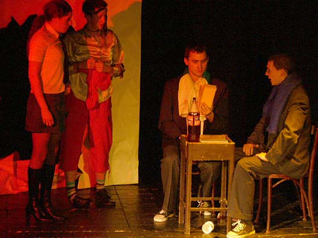
Obec spisovatelů
Gospel
|
aneb Co se stalo a jak to dopadlo (psychokomedie o duchu vosmi obrazech) - první celovečerní hra Divadílny
Účinkovali: Tomáš Kout, Petr Jediný Novotný, Pavla Drtinová, Zita Patíková, Radka Filásková a Jan Čížek/Jarda Huml Pokorný & František Čachotský (hlas) Hudební sekce Vrků Vrků: Sonia Cieślar & Filip Votava Scénář, režie a
produkce: Petr Jediný Novotný & Tomáš Kout Praha: 17. 3. 2005 Pidivadlo + 19. 4. 2005 Klub Mlejn + 8. 5. 2005 Pidivadlo + 2. 6. 2005 Pidivadlo + 5. 11. 2005 Klub Mlejn + 5. 3. 2006 Klub Mlejn + 12. 3. 2006 KC Novodvorská + 22. 4. 2006 KC Novodvorská + 14. 5. 2006 KC Novodvorská + (premiéra vánoční verze) 3. 12. 2006 Pidivadlo |
|
|
|
|


|
neúspěšný pokus o kompozici vlastních scének/písní (v omezené sestavě) a spřízněných hostů:
všechny texty napsali Novotný/Kout, není-li uvedeno jinak
1.
Hit Návštěvního dne (píseň;
hudba Filip Votava)
|
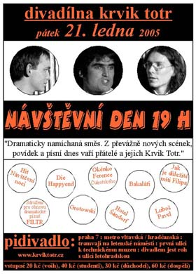 |
|
původní nové scénky základem zájezdů (v "kamarádské kompozici" i Láska je jako večernice / Píseň z kotlíku a Dobří kamarádi u rozscestníku / Křižovatka les), první půlrok 2005 víceméně neúspěšných; hudbu obstarává převážně SPODP Filtr (texty P. J. Novotný, hudba Filip Votava)
Účinkovali: Petr Jediný Novotný, Tomáš Kout, Filip Votava & hosté Klára Hanušová (j. h.), Ondřej Homola (j. h.) Scénář, režie, produkce: Petr Jediný Novotný & Tomáš Kout Světla a zvuk: Martin Holý, Petra Biňovcová
Praha: 21. 1. 2005 Pidivadlo Zájezdy: 20. 1. 2005 Ústí nad Labem + 9. 2. 2005 Plzeň + 19. 2. 2005 Praha + 2. 4. 2005 Česká Lípa - další představení byla namíchána jinak
|
|
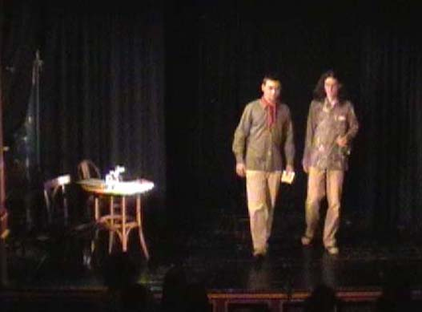
Šedesátiny Jiřičky
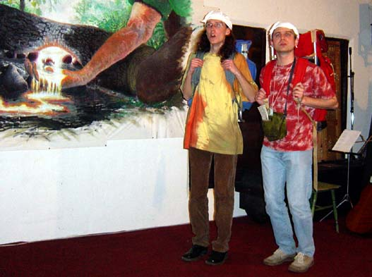
Dobří kamarádi u rozscestníku

Dobří kamarádi u rozscestníku
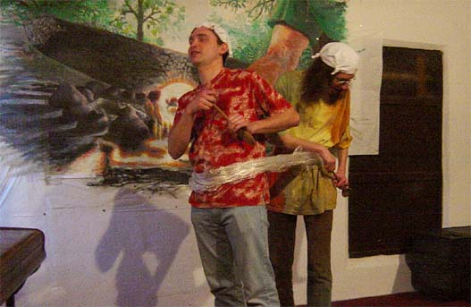
Hotel Šándorf

Jak je důležité míti Filipa
|
první skorocelovečerní hra celé Divadílny
Účinkovali: Petr Jediný Novotný, Tomáš Kout, Jarda Huml Pokorný, Lucie Janovská/Radůza Filásková, Martina Rýcová/Šimíčková, Bogdan Cieślar, Zita Patíková, Anička Kučerková a Jan Čížek Hudební sekce Vrků Vrků: Filip Votava Scénář, režie,
scénografie a produkce: Petr Jediný Novotný & Tomáš Kout Praha: 21. 6. 2004 Pidivadlo + (premiéra revisited) 6. 11. 2004 Klub Mlejn + 2. 12. 2004 Pidivadlo + 6. 3. 2005 Pidivadlo + 13. 3. 2005 Klub Mlejn Zájezdy: 29. 6. 2004 Hradec Králové + 9. 10. 2004 Plzeň
|
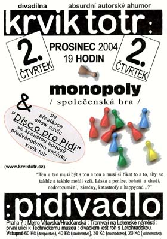 |
|
|
|
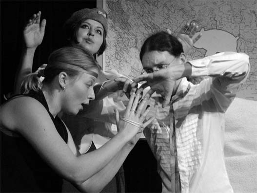


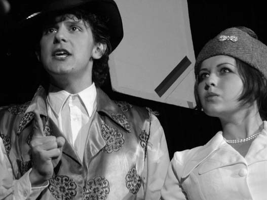
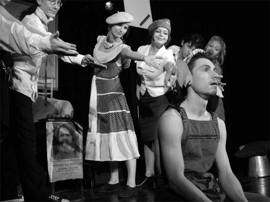

|
pražské scénkové vystoupení vychází ze zájezdové verze této doby (a omezeného složení):
všechny texty napsali Novotný/Kout
1.
Tají dech (píseň; hudba Pavel Langhammer & Filip Votava)
na zájezdech často navíc Čtyžlístek, Láska je jako večernice / Píseň z kotlíku a Rozcvička (Vlk)
Účinkovali: Petr Jediný Novotný, Tomáš Kout, Anička Kučerková, Petra Biňovcová, Bogdan Cieślar, Soňa Smugalová & hosté Martina Rýcová, Zita Patíková Scénář, režie
a produkce: Petr Jediný Novotný & Tomáš Kout Praha: 15. 6. 2004 Pidivadlo Zájezdy: 27. 4. 2004 Plzeň + 16. a 17. 7. 2004 Řepice - další představení byla namíchána jinak (převážně starší scénky) |
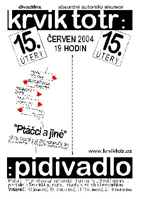 |

Křižovatka les
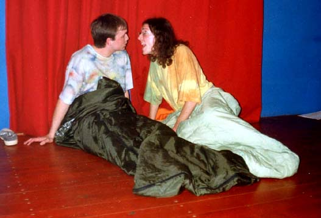
Láska je jako večernice

Pan Farmer říká
|
od 2004 každoroční přehled písňové tvorby skupiny (postupně se vyčleňuje hudební sekce SPODP Filtr), večery vždy napůl s Vladimírem Mikulkou od 2006 varianta "Ukrást sůvě oko z hlavy" (s básněmi Chuděny)
v Krvik Totr napsali všechny texty Novotný/Kout, ve SPODP Filtr napsal všechny texty Petr Jediný Novotný; autorem hudby je Filip Votava
Účinkovali: Petr Jediný Novotný, Filip Votava, Tomáš Kout, Anička Kučerková & hosté Petra Biňovcová, Sonia Cieślar, Pavla Drtinová
Praha: 21. 4. 2004 Damúza + 8. 6. 2005 Vikadlo + 23. 2. 2006 Klub v Jelení + 18. 4. 2006 KC Kaštan + 24. 10. 2006 KC Kaštan |
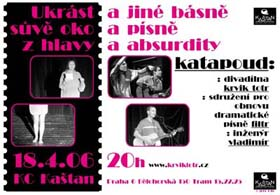 |

6. slovesná třída: kalí, běží, klopí (Rodinka)
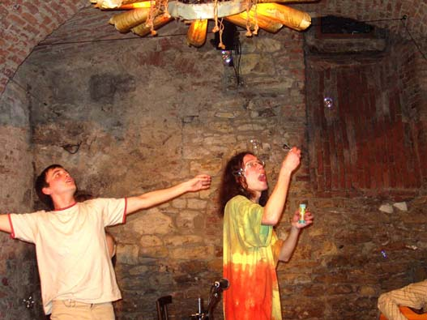
Happíseň
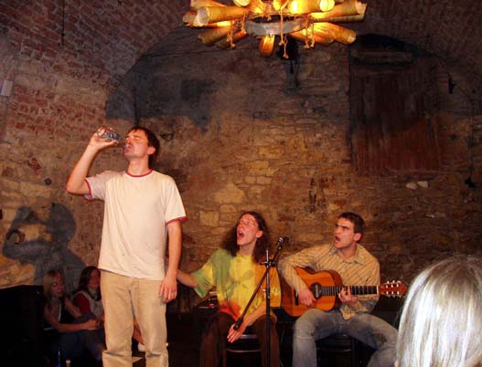
Liho blues
|
první (posléze tradiční) předvánoční večírek plný premiér; početní herci sdruženi do Divadílny:
všechny texty napsali Novotný/Kout, není-li uvedeno jinak
1.
Slavná balkónová scéna (scénka) 6.
Vánoční příběh (scénka) 9. Liho blues (Monument) (píseň; hudba Filip Votava)
Účinkovali: Petr Jediný Novotný, Tomáš Kout, Filip Votava, Martina Rýcová, Lucie Janovská, Bogdan Cieślar, Zita Patíková, Anička Kučerková, Petra Biňovcová, Pavel Langhammer (j. h.) a Willy (j. h.) Scénář, režie, produkce: Petr Jediný Novotný & Tomáš Kout Světla a zvuk: Honza Fischer
Praha 1. 12. 2003 Pidivadlo |
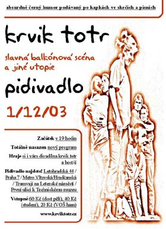 |

Slavná balkónová scéna
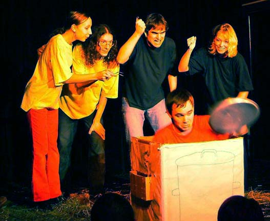
Jeseník
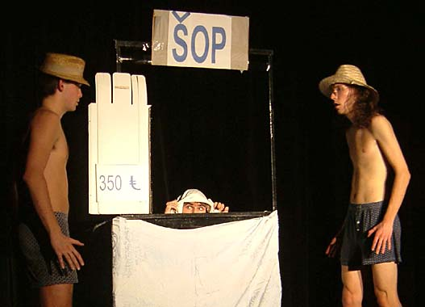
Elitní utopie
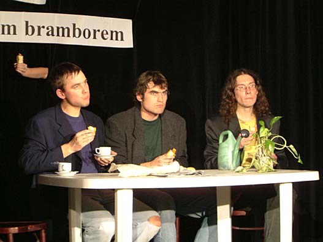
Párky v rohliky!

Tři dějství

Tři dějství
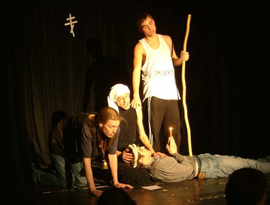
Vánoční příběh
|
trojice prvních skutečně divadelních představení na jevišti, komponovaných večerů původních scének a písní, navíc s novými hosty:
všechny texty napsali Novotný/Kout, není-li uvedeno jinak
Tají dech:
1.
Písnička na dobrou noc / Generálka (píseň
a scénka; hudba Filip Votava)
Jatý dech:
1.
Pan Farmer říká / Delvita plus (scénka
Novotný/Kout; píseň Filip
Votava)
Kompotovaný večer:
1.
The Battle of Blondýn (scénka)
Účinkovali: Petr Jediný Novotný, Tomáš Kout, Filip Votava, Lucie Janovská, Pavel Langhammer, Martina Rýcová Scénář, režie, produkce: Petr Jediný Novotný & Tomáš Kout Světla a zvuk: Honza Fischer
Praha: 26. 3. 2003 Klub u Panny Marie Sněžné (Františkánská zahrada) + 19. 5. 2003 Pidivadlo + 4. 6. 2003 Pidivadlo
|
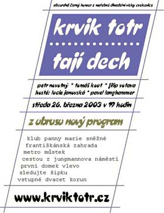 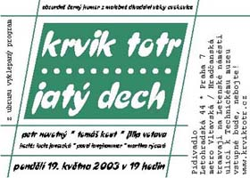 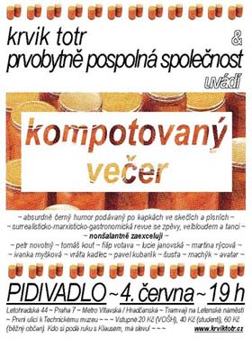 |
|
ze všech tří sestavován zájezdový set (omezený především počtem účastníků zájezdu na cca 4 herce): 1.
Pan Farmer říká / Delvita plus
Zájezdy: 28. 3. 2003 Mnichovice (s Pavlem Langhammerem a Pavlou Fridrichovou (j. h.)) + 19. 9. 2003 Jeseník (s Lucií Janovskou) + 5. 11. 2003 (s Aničkou Kučerkovou a Boldrikem (j. h.)) + 18. 11. 2003 (s Aničkou Kučerkovou a Boldrikem (j. h.))
|
|
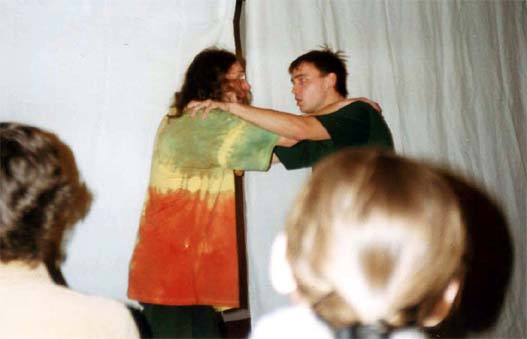
Tají dech - úvod

Pan Farmer říká
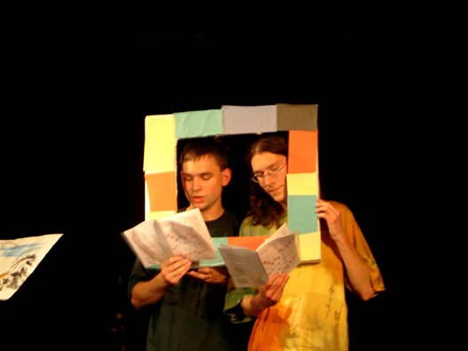
Ukrajinka

Rozcvička (Vlk)

The Battle of Blondýn

Die Happyend

Sekvence tykve
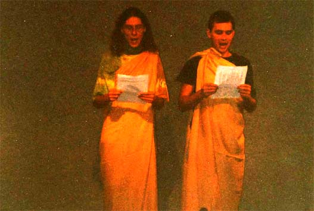
Aristotelská kompozice
|
první samostatné a první "divadelní" představení (scénky místo povídek, všechny texty poprvé spatra) a poprvé původní hudba:
všechny texty napsali Novotný/Kout
1.
Bytové divadlo (tanec; použitá
hudba)
Účinkovali: Petr Novotný, Tomáš Kout, Filip Votava a Pavel Langhammer Scénář, režie, produkce: Petr Novotný & Tomáš Kout
vzor pro zájezdy (poprvé samostatná či delší festivalová vystoupení mimo Prahu): často přítomen Čtyžlístek, Rozcvička (Vlk), Unglücksstätteleichenmärchen a průběžně novinky Síla okamžiku (recitace), Úskok (scénka), Náročný den (scénka)
|
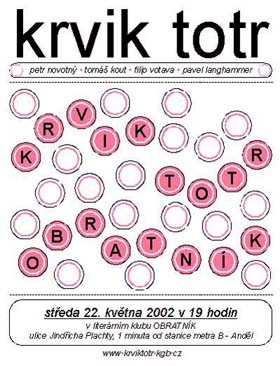 |
|
Praha: 22. 5. 2002 Obratník Zájezdy: 13. 9. 2002 Křížov + 25. 9. 2002 Plzeň + 30. 11. 2002 Plzeň + 7. 12. 2002 Regensburg
|
|

Liho blues

Vražda v Orient expresu

Cikánka
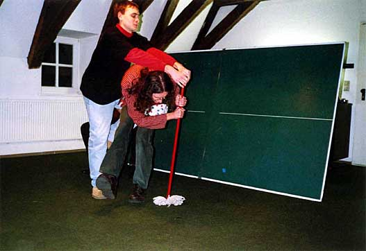
Bytové divadlo
|
poprvé "scénky" psané pro jeviště, nikoli pro album; poprvé významná účast Filipa Votavy:
všechny texty napsali Novotný/Kout
1.
Hory Krušné (píseň; hudba indická lidová) 8.
Sitcom (scénka)
b)
King Kong v NY (povídka) 10. Půldne na vsi (dramatizovaná povídka)
Účinkovali: Petr Novotný, Tomáš Kout, Filip Votava & Pavel Langhammer (j. h.) a Zuzana Bubnová (j. h.) Scénář, režie, produkce: Petr Novotný & Tomáš Kout
Mnichovice 27. 10. 2001 + Praha 15. 11. 2001 Pošetky |
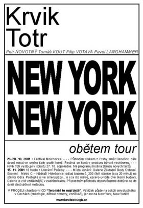 |
|
|
|
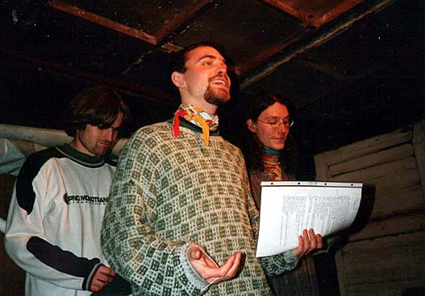
Půldne na vsi
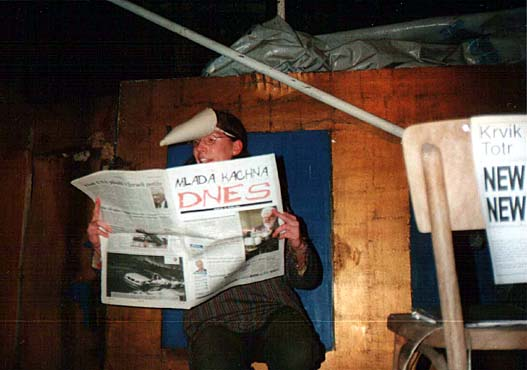
Už si to štěbetají potáplice na střeše
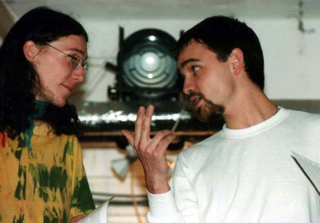
Unglücksstätteleichenmärchen
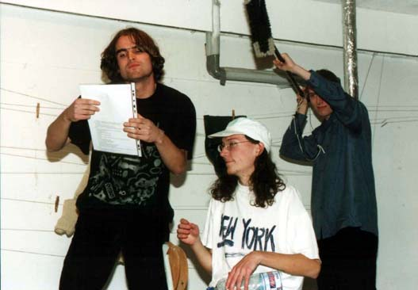
King Kong v NY

King Kong v NY
|
první komponované vystoupení s převahou premiérových dramatizovaných povídek (základem ale stále ještě texty z "vydaných-si" alb - CD Liho a MC Promňo za mňo):
všechny texty napsali Novotný/Kout, není-li uvedeno jinak
1.
Hrozný dudy (skladba; Šimek/Sobota/Nárožný, remake Novotný/Kout)
Účinkovali, scénář, režie, produkce: Petr Novotný & Tomáš Kout
Mnichovice 30. 9. 2000 |
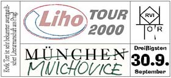 |
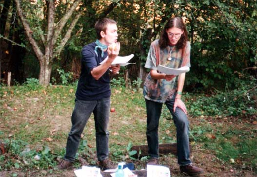
živě v Mnichovicích
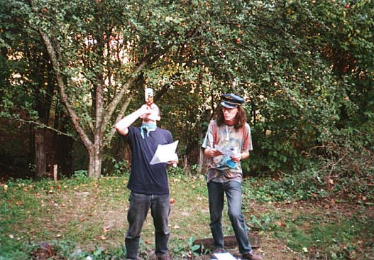
Filosfijéje
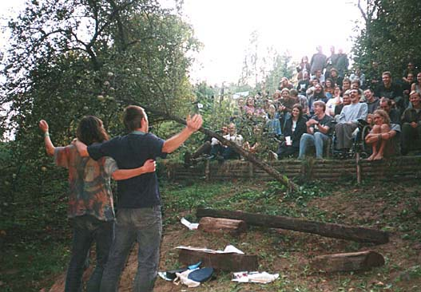
Hory Krušné
|
15-45minutové bloky v rámci bohnického pořadu Literární pošetky či festivalů přátel; čtené povídky z "vydaných-si" alb Krví a Jak krteček ke kalhotkám přišel?, později i z Našeho Rádia III.:
všechny texty napsali Novotný/Kout, není-li uvedeno jinak
a1.
O princi a kapce (povídka)
Účinkovali: Petr Novotný & Tomáš Kout
|
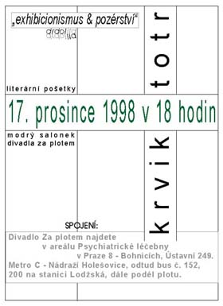 |
|
Praha: 15. 1. 1998 Pošetky + 26. 1. 1998 Gymnázium Ohradní + 28. 4. 1998 Gymnázium Ohradní + 30. 4. 1998 Pošetky + 15. 10. 1998 Pošetky + 17. 12. 1998 Pošetky + 18. 3. 1999 KC Novodvorská Zájezd: 16. 10. 1999 Mnichovice
|
|
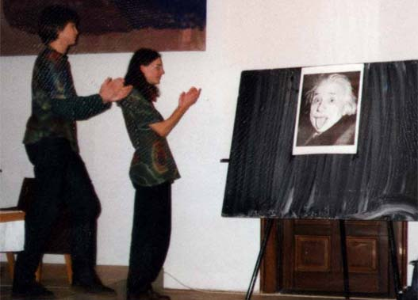
Okurky: zvonky parodie

Beseda s kosmonauty
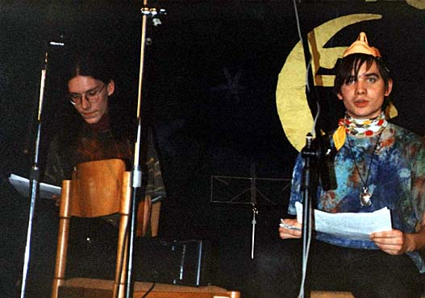
Okurky: zvonky parodie
© 2006 Krvik Totr Limity.